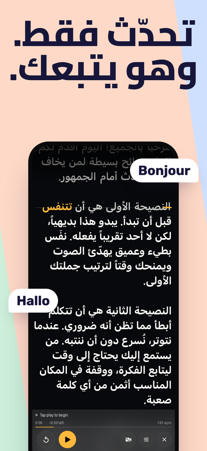
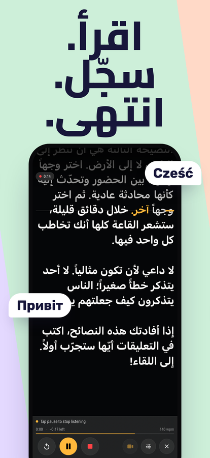
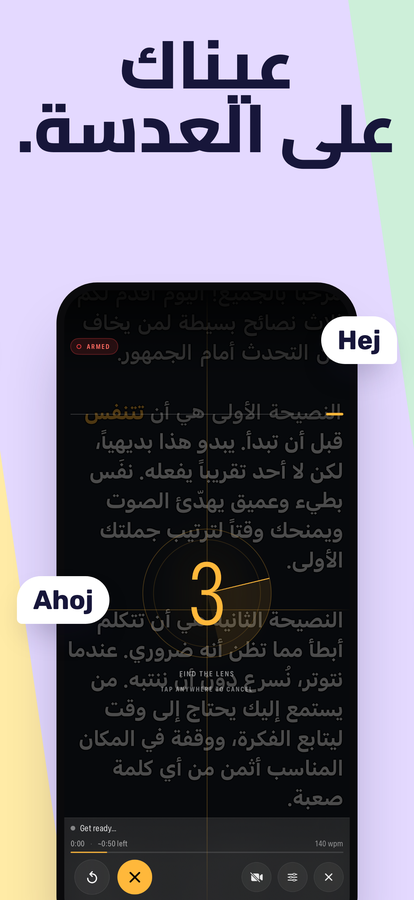
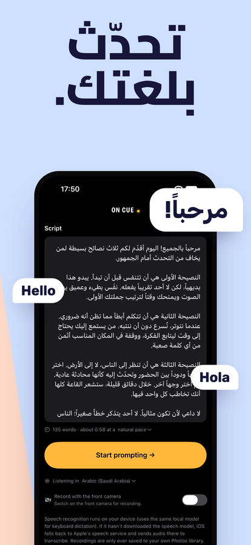

ملقّن يتبع صوتك.
تحدّث فيتحرك النص معك. توقّف فينتظرك. أعد صياغة جملة، أو تخطَّ كلمة، أو ابدأ العبارة من جديد — لن يضيع منه مكانك، لأنه يستمع إلى ما تقوله فعلًا بدل أن يتحرك بسرعة ثابتة عليك أن تلاحقها.
نزّله من App StoreiPhone وiPad · iOS 16 أو أحدث · دفعة واحدة، بلا اشتراك، بلا حساب




ماذا يفعل
يتبع صوتك
يطابق التعرّف على الكلام ما تقوله مع نصّك، ويُبقي السطر الذي وصلت إليه على سطر القراءة. توقّف كما تشاء. وللانتقال سطرًا للأعلى أو للأسفل دون لمس الهاتف، قل “scroll up” أو “scroll down” (الأوامر الصوتية بالإنجليزية).
يستمع بلغتك
يتعرّف On Cue على لغة النص الذي تفتحه ويبدأ الاستماع بها — العربية أو الإيطالية أو أي لغة يتعرّف عليها iPhone لديك. وعند أول استخدام يبدأ بلغة جهازك.
يسجّل وأنت تقرأ
لمسة واحدة وتبدأ الاستماع والتصوير معًا. تسجيل بالكاميرا الأمامية مع النص فوق الصورة، يُحفظ مباشرة في تطبيق الصور، بالدقة ومعدل الإطارات اللذين يدعمهما جهازك.
يتحمّل الارتجال
الخروج عن النص أمر طبيعي لا خطأ. اقفز إلى الأمام أو ارتجل جملة — سيجدك من جديد بدل أن يقف منتظرًا كلمة لم تقلها أبدًا.
مصمّم للقراءة
حجم نص وهوامش قابلة للضبط، وأربعة أنماط للمحاذاة، وسطر قراءة يمكنك سحبه قرب العدسة، وتباين لكل كلمة ليبقى النص مقروءًا فوق صورة فاتحة.
يعرف كم تستغرق
عدّ للكلمات ومدة تقديرية وأنت تكتب. الوقت المنقضي والوقت المتبقي ووتيرتك أثناء الكلام — تُقاس بسرعتك الفعلية لا بالتخمين.
يبقى على جهازك
لا يرسل On Cue نصّك ولا تسجيلاتك إلى أي مكان. ويجري التعرّف على الكلام على الجهاز نفسه كلما سمح iOS بذلك.